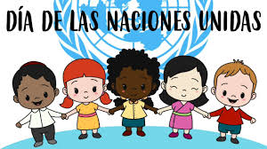
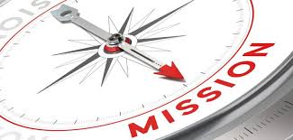
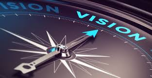
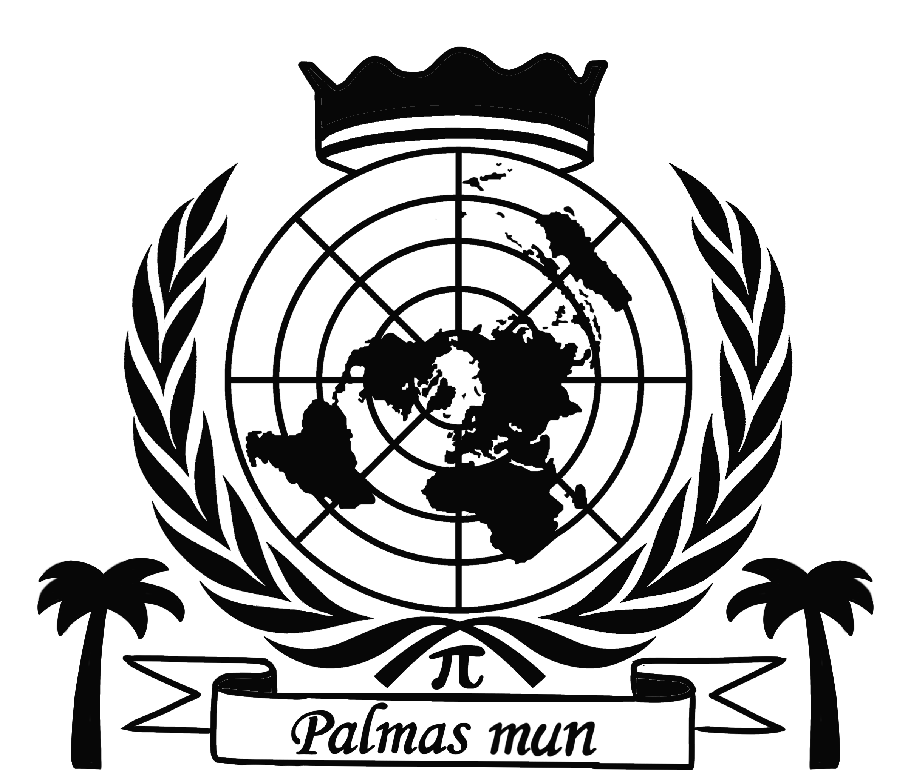

¿Qué es la ONU?
La Organización de las Naciones Unidas (ONU) es una organización internacional fundada en 1945 para promover la paz y la cooperación entre los países del mundo.
Misión
La misión de la ONU es mantener la paz y la seguridad internacionales, promover los derechos humanos y fomentar el desarrollo sostenible. Más sobre la misión de la ONU.
Visión
La visión de la ONU es un mundo en el que todos los países cooperen para resolver problemas globales, como la pobreza, el cambio climático y los conflictos. Más sobre la visión de la ONU.
Objetivos
Los objetivos principales de la ONU incluyen:
- Promover la paz y la seguridad internacional.
- Proteger los derechos humanos y las libertades fundamentales.
- Fomentar el desarrollo económico y social sostenible.
Más sobre los objetivos de la ONU.
 }
}
Gimpalmas MUN - Introducción
El Gimpalmas MUN es un modelo de Naciones Unidas organizado en nuestro colegio. Este evento reúne a estudiantes para simular debates y discusiones internacionales, promoviendo el aprendizaje sobre diplomacia y política global.
Tema de este Año: Impacto de la Inteligencia Artificial
Este año, el tema del Gimpalmas MUN es el impacto de la inteligencia artificial (IA) a nivel mundial. La IA está transformando diversas áreas de nuestra vida:
- Salud: La IA está revolucionando el diagnóstico y tratamiento de enfermedades, mejorando la precisión y eficiencia de los cuidados médicos.
- Medio Ambiente: La IA se utiliza para monitorizar y predecir cambios ambientales, optimizando los esfuerzos en la protección del planeta.
- Educación: Las tecnologías de IA están personalizando la experiencia educativa, adaptando los contenidos a las necesidades de los estudiantes.
- Trabajo: La automatización y los sistemas inteligentes están cambiando el mercado laboral, creando nuevos tipos de empleos y desafíos.
Para más detalles sobre el impacto de la IA, visita este enlace.